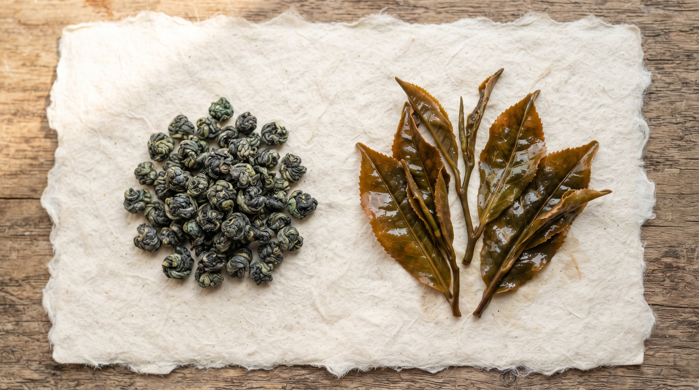

ЛОТ №14 · ОКСИДАЦІЯ 45%
1400 М Н.Р.М.
Алішань Габа Улун
Терруар:Округ Цзяї, Тайвань
Збір:Жовтень 2026 · Ручний
Ферментація:Анаеробна (GABA 195 мг)
Майстер:Майстер Чень Вей
Букет: Стигла синя слива, печений лісовий горіх, гречаний мед та прохолодний м'ятний післясмак на видиху.
820 ₴
Банка 50 г / або пробник 15 г (280 ₴)